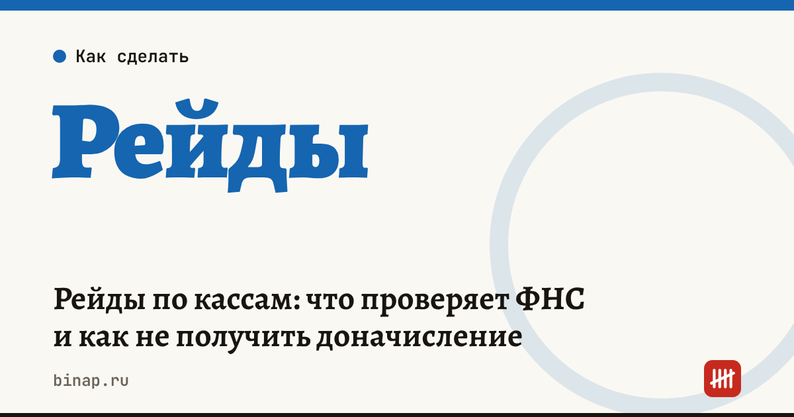

Рейды по кассам: что проверяет ФНС и как не получить доначисление

Налоговая проверяет не только то, зарегистрирована ли касса, но и пробит ли чек при каждой оплате. Выручку по кассе сверяют с налоговой отчётностью и операциями по расчётному счёту, и при расхождении налоговую базу могут скорректировать. Об этом сообщило УФНС по Югре, которое проводит выездные рейды; «Клерк» пересказывает это как общую практику.
Коротко
- УФНС по Югре проводит выездные рейды по соблюдению порядка применения касс (страница ФНС от 27.10.2026).
- Одно из серьёзных нарушений — неприменение кассы: зарегистрировать её мало, чек нужен при каждом расчёте.
- Расхождения между отчётностью, операциями по счёту и выручкой по кассе — основание для корректировки налоговой базы.
- Упрощённая регистрация кассы через оператора фискальных данных не работает для маркированных товаров, игорного бизнеса, развозной и разносной торговли.
- Защита — ежемесячная сверка трёх цифр: касса, банк, учёт.
Сроки, изменения и разборы для ИП и самозанятых — каждое утро в Telegram и MAX. Подпишитесь, чтобы не пропустить.
Что проверяют
| Что | Как проверяют | Что может быть |
|---|---|---|
| Чек при каждом расчёте | рейд, контрольная покупка | штраф за неприменение кассы |
| Исправность кассы и срок фискального накопителя | данные оператора фискальных данных | касса перестаёт передавать чеки |
| Чеки коррекции при сбоях | сверка данных кассы | вопросы к пропущенной выручке |
| Реквизиты в чеке | проверка чека | штраф за неправильный чек |
| Выручка: касса, банк, отчётность | сверка трёх источников | корректировка налоговой базы |
Размеры штрафов в материале ФНС не названы.
Как сверить выручку
Пример (расчёт редакции, цифры условные). ИП на УСН «доходы» принимает оплату картой и наличными.
| Источник | Сумма за месяц |
|---|---|
| Поступления по эквайрингу и на счёт | 400 000 ₽ |
| Чеки по кассе | 340 000 ₽ |
| Разница | 60 000 ₽ |
Разницу нужно объяснить документами: возвраты, предоплаты с чеком в другом месяце, переводы между своими счетами. Если объяснить нечем, налоговая может посчитать 60 000 ₽ неучтённой выручкой. На УСН 6% это 3 600 ₽ налога плюс пени и штраф за неприменение кассы.
Онлайн-касса, которая сама сверяется с эквайрингом: ссылка
Что сделать сейчас
- Проверьте срок действия фискального накопителя и запланируйте замену заранее.
- Убедитесь, что чек пробивается на каждую оплату: наличные, карта, QR-код, переводы по реквизитам.
- При сбое или ошибке формируйте чек коррекции, а не оставляйте расхождение.
- Раз в месяц сводите три цифры: выручка по кассе, поступления по счёту и эквайрингу, выручка в учёте. Расхождение запишите с причиной.
- Проверьте обязательные реквизиты в чеке, особенно после обновления кассы.
- Если торгуете маркированными товарами или развозите заказы, не рассчитывайте на упрощённую регистрацию кассы.
Что изменится в форматах чеков — новые форматы фискальных документов. Как выбрать эквайринг и посчитать реальную ставку — эквайринг для ИП. Сезонному бизнесу кассу на время простоя снимать с учёта не обязательно — достаточно следить за накопителем и передачей чеков.
Частые вопросы
Достаточно ли просто зарегистрировать кассу? Нет. По разъяснению УФНС, чек нужно пробивать при каждой расчётной операции.
С чем налоговая сверяет выручку по кассе? С налоговой отчётностью и операциями по расчётному счёту. Расхождения могут стать основанием для корректировки налоговой базы.
Что делать, если касса сломалась? Восстановите работу кассы и сформируйте чек коррекции на расчёты, по которым чек не был пробит.